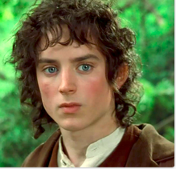
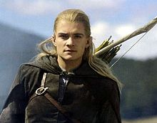
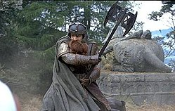
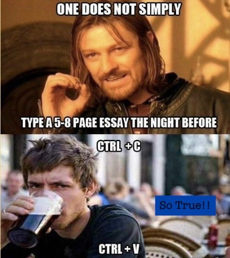
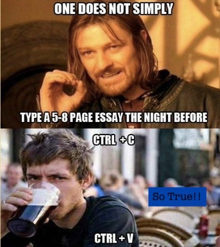
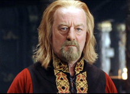
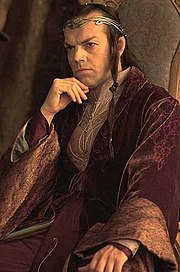

- Frodo, the annoying person who spills half the water bottle when he drinks from a skin sac in Mordor.

- Gandalf … famous quote, "I have not gone through fire and death to face the likes of you (enemy), you wormtongue." Along the lines of that. :)

- Legolas (no comment, his amazingness is self-explanatory)

- Samwise Gamgee (Hero of them all)

- Aragorn

- Peregrin Took (Pippin) Honestly, this hobbit is a stinker, he eats everything and litterally does whatever he wants (e.g. throws a skeleton down the well to wake up the orcs and ruin the whole mission and cost them the life of Gandalf)

- Merriadoc Brandybuck (Merry) Exactly like Pippin except that he kills the Witch King.

- Gimli (the natural comedian character of this dwarf is outstandingly apparent)

- Faramir (no comment, resmebles Eoqwyn (whom he marries) which is not surprising)

- Boromir, one does not simply not have Boromir in his favorite character list.
 

- Theoden, "Where was Gondor?" Aragorn, "In Gondor." Aragorn's literary genius is simply shown in this fake conversation.

- Eomer (no comment)

- And no I don't like Denethor. He is nuts. Burning his son?! Child Abuse bro!

- Eowyn (good fighter, but terrible cook, though she is a suitable wife for Faramir they are kinda similar. I mean even Aragorn couldn't eat her (disgusting) food.)
- Treebeard, I like when he says, "Whose side am I on? I am on no one's side because no one is altogether on my side." My kinda dude.

- Elrond very wise, maybe a little too much...I also like when Frodo is in Rivendell and Gandalf is taliking about the battle against Sauron, and Elrond is like, " Yes Gandalf, I was there, 3000 yrs ago." (Pretty insane eh?)
